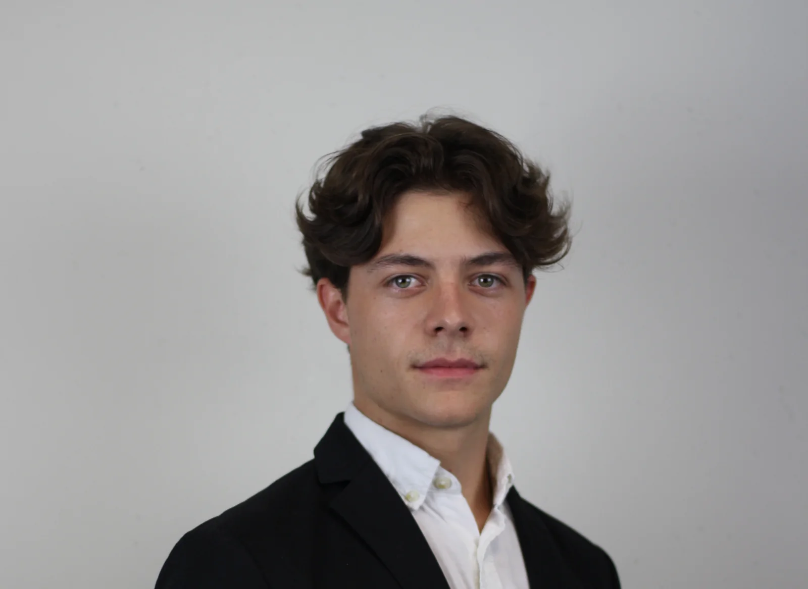
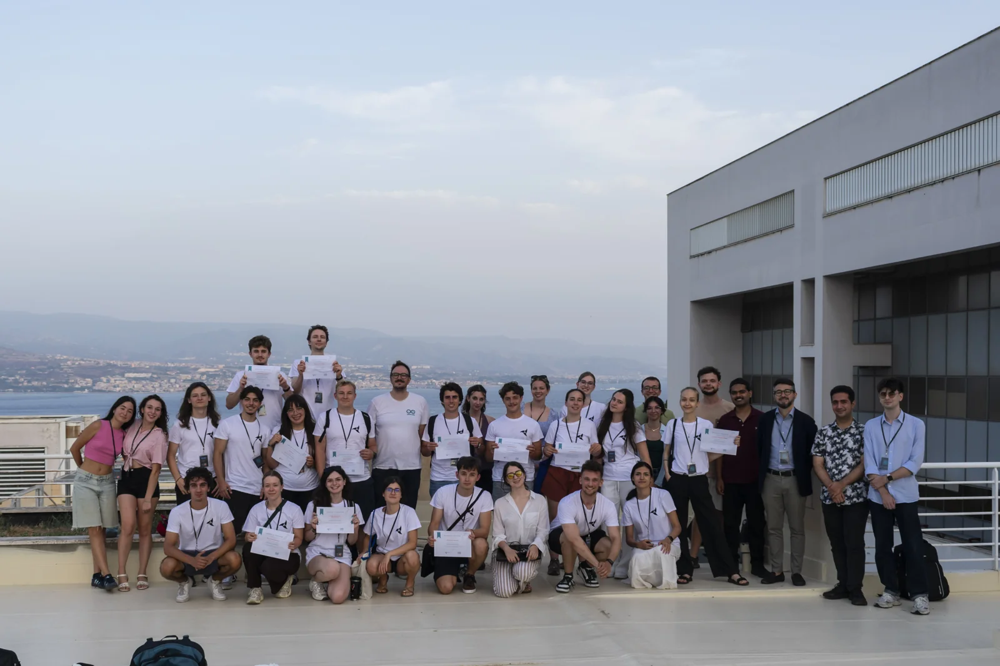

AMRT · 2025–2026
Electric kart.
Engineered
together.
Mechanical design, electric powertrain integration and a lot of time in the workshop.
72 V Architecture5 kW Nominal motor power
Explore the project


Mechanical engineering student
Arts et Métiers × Georgia Tech.
Seeking a 6-month internship from January 2027
Curious about new places, new sports, and the people I meet along the way.


AMRT · 2025–2026
Mechanical design, electric powertrain integration and a lot of time in the workshop.

A turbine, a generator, and the search for the right load.

The skills I’m developing.
The projects behind them.
SolidWorks, Python and Arduino, connected through a turbine–generator test bench.
See the experimentCAD, laser cutting, 3D printing and mechanical integration on the electric kart.
Inside the workshop3D scanning, Fusion 360 and post-processing during my internship at GRYP 3D.
Discover the internshipBeyond the workshop
Bringing 20 European students to Bordeaux with BEST. Exploring embedded systems together in Messina. Learning from people is as much a part of my journey as learning to build.
Leadership & international experience

A team achievement
Our year’s most technical project, recognised by the Groupe Girondin de Bordeaux. €2,500 awarded to the team.
The project behind itWhat’s next
I’m looking for a six-month engineering internship
from January 2027, with international mobility.